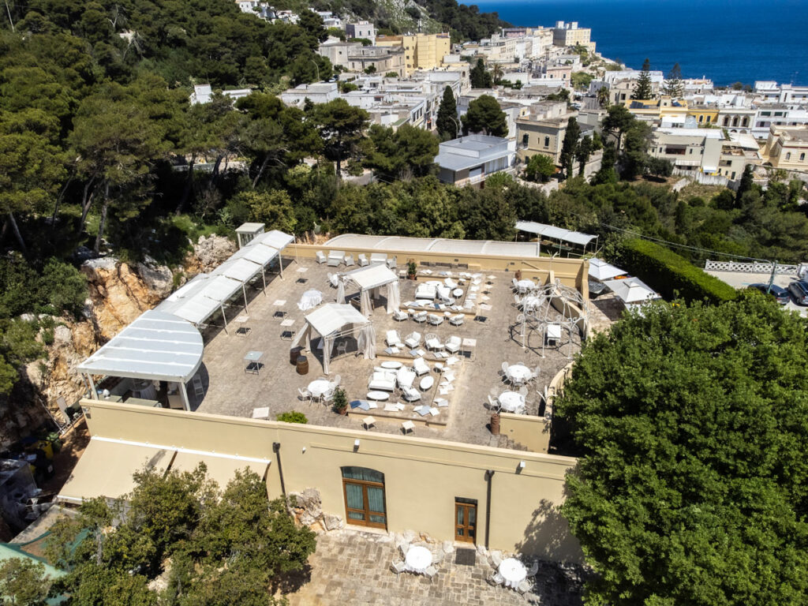
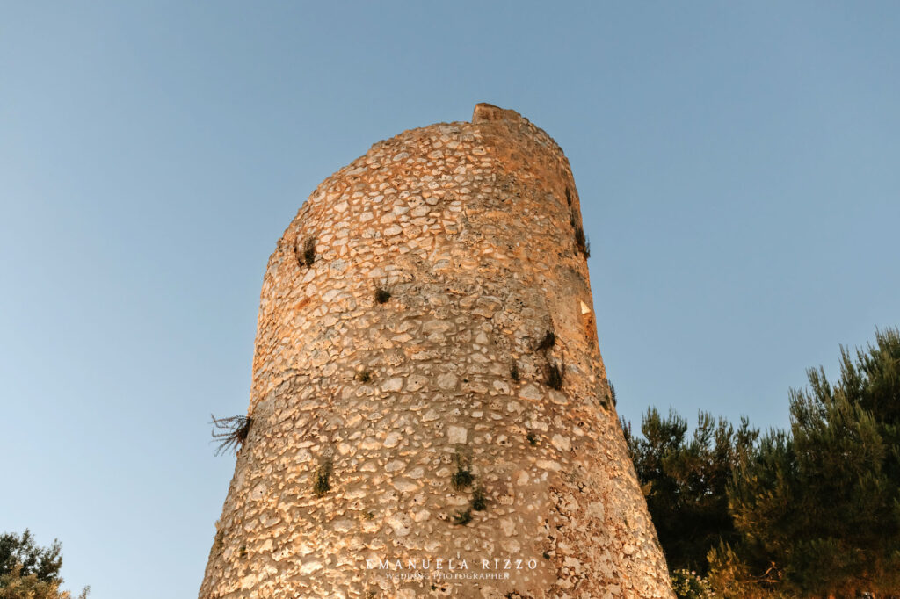
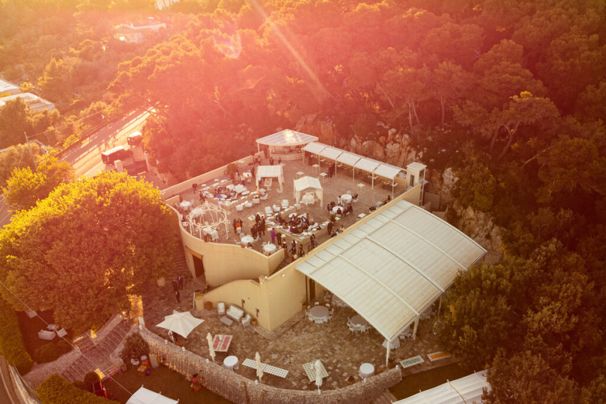

Cala dei Balcani è una location per matrimoni che si affaccia sul mare del Salento, offrendo una vista mozzafiato che permette affascinanti scorci da Cala di Leuca fino ai Balcani. Tenendo le spalle alla nostra Torre Saracena, i nostri sposi decidono spesso di sposarsi con rito civile guardando l'immenso mare davanti agli occhi. Un'esperienza romantica e toccante che rimane nel cuore di sposi ed invitati.
Oltre il matrimonio con la vista sul mare, la nostra location offre una diversa visione del matrimonio. È il desiderio principale di Francesco Urso, il titolare, che vuole permettervi un matrimonio fuori dal comune. Se dunque cerchi un matrimonio dove tutti stanno solo seduti a mangiare, sei nel posto sbagliato. Se invece cerchi un matrimonio romantico e divertente, unico e personalizzato, dinamico e coinvolgente, sei nel posto giusto.

Matrimonio Coinvolgente con Intrattenimento, Divertimento ed Interazione
Nella nostra location vista mare il vostro sogno di un matrimonio differente, unico ed irripetibile diventa realtà. A Cala dei Balcani offriamo una differente visione del matrimonio, con un'esperienza unica che unisce intrattenimento, divertimento ed interazione. Amiamo creare matrimoni indimenticabili, dove ogni dettaglio è curato con dedizione, grazie al nostro team interno che vi dedica tutta l'attenzione di cui avete bisogno.
Cala dei Balcani ti permette un matrimonio particolarmente dinamico grazie ai numerosi angoli che permettono agli ospiti di spostarsi e godersi lo spettacolo del luogo. Saranno coinvolti grazie a momenti speciali e ricchi di sorprese. Dalla cerimonia fino al ricevimento, i nostri servizi sono progettati per coinvolgere voi e i vostri ospiti in un'esperienza avvolgente.
Immaginate di sposarvi con il mare come sfondo, mentre gli sguardi commossi degli amici e dei parenti si perdono nell'orizzonte infinito. La vista mozzafiato che si estende dalla nostra Torre Saracena, che abbraccia Cala di Leuca fino ai Balcani, renderà il vostro matrimonio ancora più magico e romantico.

Location in Salento in Esclusiva
La vostra giornata speciale merita attenzione e cura senza compromessi. Per questo motivo, proponiamo solo matrimoni in esclusiva. Il nostro staff dedicato si concentra esclusivamente sulla vostra coppia, garantendo un'attenzione personalizzata e un servizio impeccabile. Dal momento in cui varcherete la soglia della nostra location, sarete trattati come parte della nostra famiglia.
La nostra cucina interna delizierà i vostri palati con prelibatezze culinarie, preparate con passione e maestria. Ogni piatto sarà una danza di sapori, realizzata con ingredienti freschi e di alta qualità. Il nostro team di chef si impegna a soddisfare le vostre preferenze culinarie e a creare un menu su misura per il vostro matrimonio. Sarete liberi di personalizzare ogni dettaglio, garantendo un'esperienza unica e indimenticabile per voi e i vostri ospiti.
Il nostro maître vi assisterà in ogni istante, accompagnandovi in un viaggio tra le nostre aree: dalla Torre Saracena alla Corte Panoramica, dalla Sala Cattedrale alla Terrazza Belvedere.

Team Interno Esperto e Capace
Alla base di tutto ciò che facciamo ci sono i nostri valori fondamentali: famiglia, libertà ed entusiasmo. La nostra missione è accogliere e coccolare ogni coppia di sposi, creando un'atmosfera calda e familiare in cui tutti si sentano a proprio agio, fino all'ultimo invitato. Ogni membro del nostro team è scelto per la sua capacità di garantire cura, umanità e ascolto.
Siamo qui per realizzare i vostri desideri e per rendere il vostro matrimonio unico e speciale. Siamo dinamici e creativi, pronti a personalizzare ogni aspetto del vostro matrimonio, dalla decorazione agli intrattenimenti. Siamo entusiasti di emozionare e divertire i vostri ospiti, creando momenti indimenticabili che resteranno nel cuore di tutti.
Il Vostro Matrimonio Indimenticabile nel Salento
Se state cercando un matrimonio indimenticabile nel Salento, Cala dei Balcani è la scelta perfetta. Con la nostra visione del matrimonio, offriamo un'esperienza unica, emozionante, divertente e coinvolgente. La location esclusiva sul mare, il team interno dedicato, la cucina gourmet e gli spazi scenografici fanno di Cala dei Balcani il luogo ideale per il giorno più bello della vostra vita.
Volete scoprire da vicino la nostra location vista mare?
Il nostro team è sempre disponibile per una visita e una consulenza personalizzata — senza impegno.